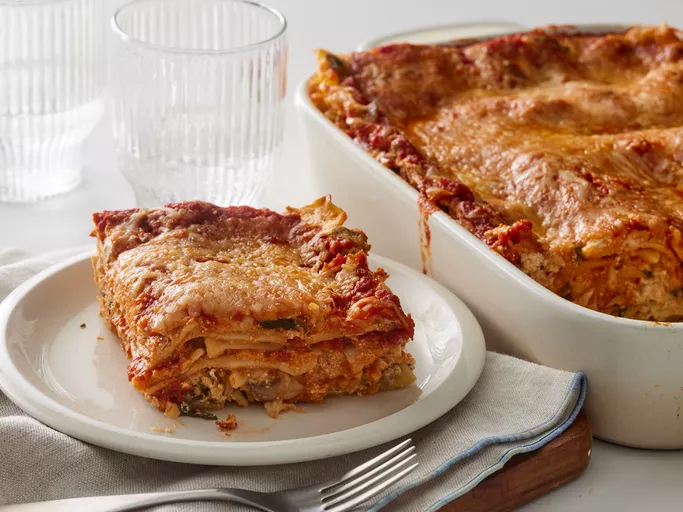
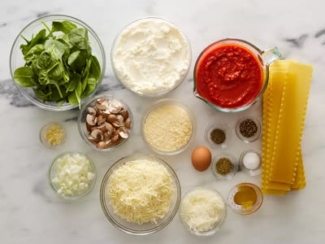

A spinach lasagna recipe made with fresh spinach and plenty of cheese — ricotta, Romano, and mozzarella. This cheesy, hearty lasagna can also be made without the spinach.
Gather all ingredients. Preheat the oven to 350 degrees F (175 degrees C).
